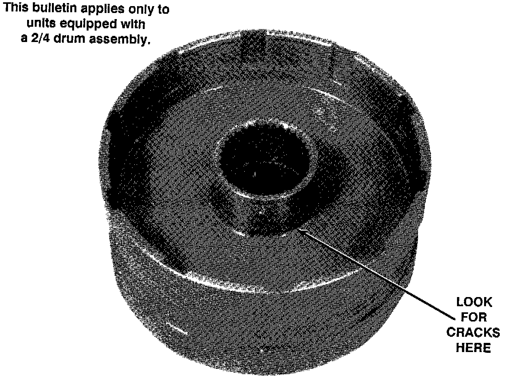

A/T - Bind-Up In 4th Gear
TECHNICAL BULLETIN # 125TRANSMISSION: Honda-Acura-Sterling
SUBJECT: Bind-Up In 4th
APPLICATION: Honda-Acura-Sterling
DATE: AUG 1992
HONDA - ACURA - STERLING 4 Speeds

A bind-up in 4th, and burnt 2nd and/or 4th clutches may be caused by a cracked 2/4 drum. Inspect the area around the hub for cracks VERY CLOSELY.
DIAGNOSIS HINT:
A pressure gauge on the 2nd clutch tap which shows pressure when in 4th gear, indicates the possibility of a cracked drum.
Keep in mind that because of the valve body circuitry, no pressure will be present in the 4th gear circuit when in 2nd gear.